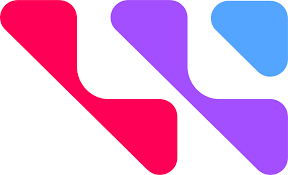

CONTACT
xiaolu.kou@ucla.edu(310)-994-3385
San Jose, CA
Github page
Leetcode

OBJECTIVE
As a senior member of an engineering group, I have personally witnessed the productivity boost by taking lead or involved in various software developments. Eager to apply my strong problem-solving abilities, attention to detail, and collaboration skills to create impactful and innovative software solutions.
EDUCATION
Ph.D. and M.S.
Material Sci. & Eng.
UCLA, 2014
Los Angeles, CA
B.S.
Electrical Engineering
Nankai Univ., 2009
Tianjin, China
SKILLS
Language: Python, SQL, R, HTML,JavaScript, Java
Framework: PyTorch, Flask, Bootstrap
CERTIFICATES
Harvard CS50,
in progress
Stanford Algorithms,
Coursera (2021)
Data Mining and App.,
Stanford (2022)
Six Sigma Brown Belt,
Seagate (2015)
WORK EXPERIENCE
Technologist
Western Digital 
Nov 2017 - current / Fremont, CA
- Developed work report automation in JMP, R and Python respectively by querying lab data from SQL database
- Worked with internal data engineers to upload local image data and parsed metadata to company-wide Big Data Platform consists of AWS S3, PostgreSQL and a RESTful API for reliable fast search and machine learning projects
- Automated daily workflow which includes data acquisition, data analyze and data reporting to increase the productivity of advanced physical failure analysis by >100%
- Accelerated R&D learnings of FA results by machine learning using PyTorch
Sr. Engineer
Seagate Technology
Feb 2015 - Nov 2017 / Bloomington, MN
- Continuously improved device reliability by applying state-of-art FA tool and offering expert opinion on failure root causes
- Collaborated with IT on the development of in-house lab request system, which enables auto work report generation and customer access to job progress
- Led a Six Sigma project to screen out high error devices at wafer level several months before traditional tests on full build device
- Coordinated lab resource to increase lab capacity by 30% and reduced turnaround time of complicated analysis jobs from 3+ weeks to < 1 week
PROJECTS
Stock Transaction, a web app
Dec 2022 - Mar 2023/ CS50 course project
- Obtained stock quotes through IEX with token
- Created a SQL database with multiple schemas for user info, transaction info and stock inventory
- Created RESTful APIs with Flask to achieve functions such as user register, login and stock transactions
- Written the webpages with HTML/CSS